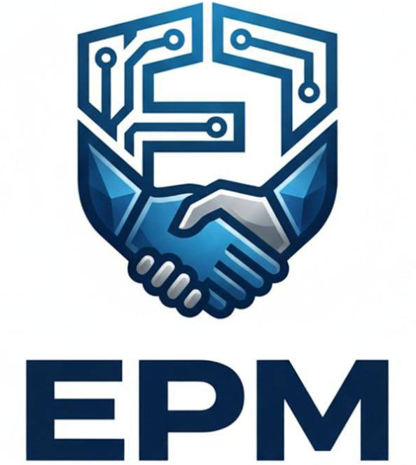

Каталог
Услуги
Доставка и оплата
Статьи
О компании
Контакты
+7 (933) 993 87 77
sales@erm-group.ru
Заказать звонок
Главная
/
Статьи
Статьи о металлопрокате
Все статьи
Продукция
Марки стали и стандарты
Продукция
Швеллер и двутавр: в чём разница и как выбрать
Март 2026
Марки стали
Как расшифровать марку стали?
Март 2026
Продукция
Что такое металлопрокат?
Февраль 2026
Продукция
Виды стальных труб: классификация и применение
Февраль 2026
Марки стали
Нержавеющая сталь: марки, свойства, применение
Январь 2026
Продукция
Листовой прокат: виды, характеристики, подбор
Январь 2026
✕
Предыдущая
Следующая
✕
Заказать звонок
Менеджер свяжется с вами в течение 15 минут
Я даю согласие на обработку персональных данных
Отправить